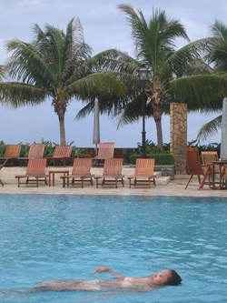
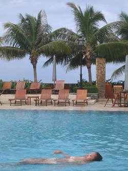

Poisson Image Blending
For the image alignment project, I implemented a single-scale sliding window alignment search to minimize the sum of square difference between each channel. I also implemented an image pyramid to increase efficiency and improve the offset range. The images often had borders, so I also implemented automatic cropping to crop the final images so there are no solid color borders.
Here are some blended image results!
 

Image Set 1

Image Set 2
Image Set 3